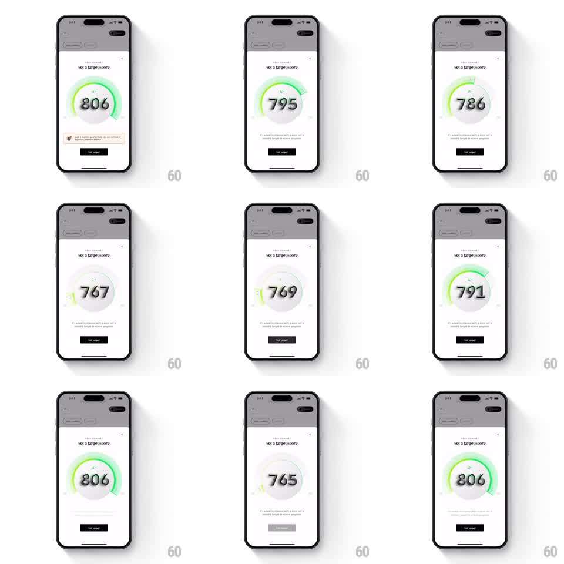

Media
Frame-by-frame

Rebuild this interaction 1:1: CRED's target score slider - on a light "set a target score" screen, dragging along a 3D arc around the big score number scrubs the value (765 to 806 and back), a green gradient glow intensifying with the score, a floating badge tracking the arc position, and the number springing to rest when released.

Rebuild this interaction 1:1: CRED's target score slider - on a light "set a target score" screen, dragging along a 3D arc around the big score number scrubs the value (765 to 806 and back), a green gradient glow intensifying with the score, a floating badge tracking the arc position, and the number springing to rest when released. ## Integration Integration: stack-agnostic spec - springs given as stiffness/damping, timed motions as duration + curve; map every value to your framework and animation library of choice. ## Scene Light screen with "set a target score" header. Center: a huge score number (range shown 765-806) wrapped by a circular arc track; a green gradient segment fills the arc up to the current value with a glow at its tip. A small floating badge rides the arc. Below: explainer text and a dark "Set target" button. ## Motion spec Pattern: arc drag with spring settle and reactive glow. - Drag on the arc: the value tracks the touch angle (full arc maps the score range), the number ticking live with digit roll. - The green segment extends/retracts with the value, its tip glowing brighter at higher scores (glow radius 8 -> 20pt, hue shifting lime -> emerald). - The floating badge follows the arc tip with a spring lag (~380/20), bobbing as it catches up. - Release: the value snaps to the nearest whole number (spring ~340/18) with a subtle haptic-like tick at each detent. - The arc has 3D depth: the track tilts slightly toward the viewer (rotateX ~8deg) and the glow casts on it. ## Calibration - The number is always legible - the arc never passes under the digits. - The glow is the emotional readout: low scores barely glow, 800+ shines. ## Reduced motion Value changes by tap on +/- regions with a 200ms digit fade; no glow animation. ## Don't miss - The badge never overlaps the number - it rides outside the arc. - The arc ends have rounded caps and the track shows faint tick marks.